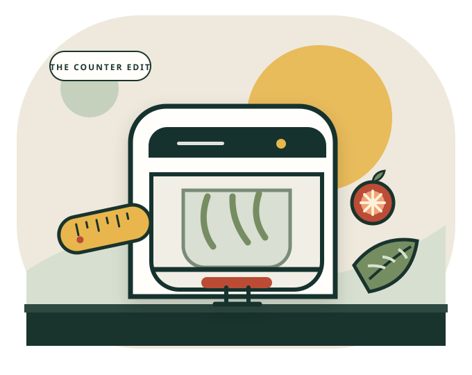

Basket or oven-style air fryer: what should you compare?
Begin with the shape of your usual meal, then compare footprint, layout, and care instructions.
Read the guideAffiliate disclosure “I get commissions for purchases made through links in this post.” As an Amazon Associate I earn from qualifying purchases.
How this worksCountertop Notes · First issue · 20 November 2026
A thoughtful shop for countertop cooking starts with better questions: what you make, what fits, and what you’re willing to clean.
No product is ranked until its intended listing and evidence are confirmed.

Original illustration · not a product photoStart with your routine
Begin with the shape of your usual meal, then compare footprint, layout, and care instructions.
Read the guideTurn a headline number into a practical check against the foods and portions you actually make.
Read the guideA tape measure and the maker’s care instructions can answer more than a glossy product photo.
Read the guideA seasonal question · not a trend claim
Before buying another kitchen helper, sketch the counter space, door swing, storage spot, and outlet it would need. This is an editorial prompt—not evidence of search demand or a seasonal bestseller.
The shop desk
Individual page-reader re-opens surfaced five Amazon product pages: three with an Air Fryers breadcrumb and two in the Meat Thermometers category path. Those are observed destinations only—not confirmed product intent, current availability, or valid affiliate tracking.
Open the shop queueProduct facts stay blank until a current, authorized source is attached. Purchase buttons stay off until a Special Link is tested in the enrolled Associates workflow.
Review the open checksNotes for the next edition
Reader signup is paused until a privacy-reviewed email service, retention plan, and working unsubscribe path are configured. This static page does not collect email addresses.
A better way to shop
See how we separate source facts, editorial hypotheses, and unverified link targets.